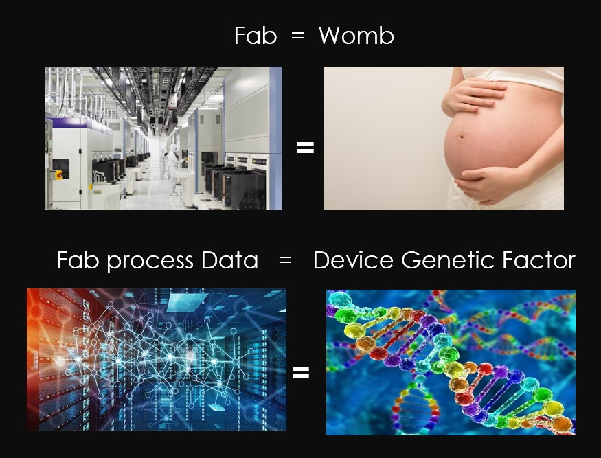
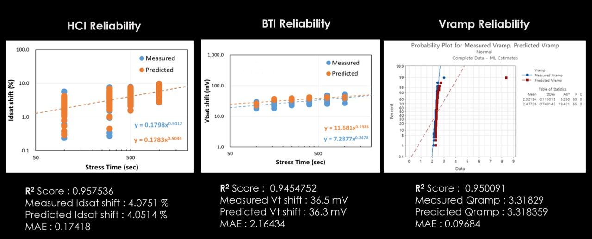
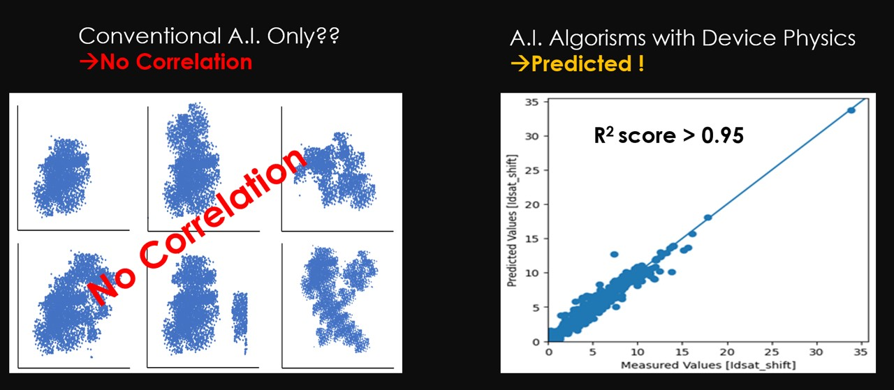

Semiconductor Reliability Test
반도체 신뢰성 검사 없이 장치의 유전자 요인분석을 통해 반도체의 신뢰성을 예측할 수 있으면 앞으로 반도체 산업의 패러다임을 바꿀 것입니다. 태아의 유전자 정보는 어머니의 뱃속에서 형성되는 것처럼 반도체의 유전자 정보는 반도체 제조공정에서 결정될 수 있음에 영감을 받았습니다. 이러한 반도체 유전자 정보를 분석할 수 있다면 반도체의 수명과 질병을 평가 없이 예측할 수 있을 것입니다. HEX A.I Labs는 Device Physics와 Reliability Model을 학습한 인공지능 알고리즘을 통해 신뢰성 평가없이 신뢰성을 예측할 수 있는 기술을 제공합니다.

반도체 산업에서는 180개 이상의 고가 신뢰성 측정 장비와 200명의 신뢰성 엔지니어가 배치되어 연간 약 1,300개의 테스트 웨이퍼를 소비하고 있습니다. 평균적으로 WLR/PLR 신뢰성 평가에는 약 3.2개월이 소요됩니다. 특히 WLR(HCI/BTI/TDDB/Vramp) 검사는 약 4주가 소요됩니다.

반면, 헥스에이아이랩스의 반도체 유전자 분석 AI 기술을 통해 단 2명의 과학자가 단 2시간 만에 WLR(HCI/BTI/TDDB/Vramp) 신뢰성 검사를 완료할 수 있게 되었습니다. 기존의 4개 WLR 테스트는 30일이 소요되지만, GAIYA를 통해 2시간 만에 검사를 완료하며, 정확도는 96~98%에 달합니다.

현재 이 기술을 가공하거나 개발 중인 기업은 없습니다. 따라서 우리는 6개국에 특허를 출원할 예정이며, 이미 한국에 특허를 등록하였습니다.